Снимок публичной версии
Снимок публичной версииWISE / FRAME
Mini App визуальной студии: диагностика, услуги, покупки и профиль в одном Telegram‑маршруте.
Открыть проект14 выбранных проектов из рабочей среды
Показываю реальные экраны: публичные продукты, товарную аналитику, доски лидов и локальные платформы. Для каждого кейса отделяю наблюдаемый интерфейс от неподтверждённых продаж.
Снимки и ссылки проверены
Снимки сделаны с реальных публичных страниц. Серверные токены, оплаты и закрытые кабинеты не считаются проверенными без отдельного live‑теста.
Снимок публичной версииMini App визуальной студии: диагностика, услуги, покупки и профиль в одном Telegram‑маршруте.
Открыть проект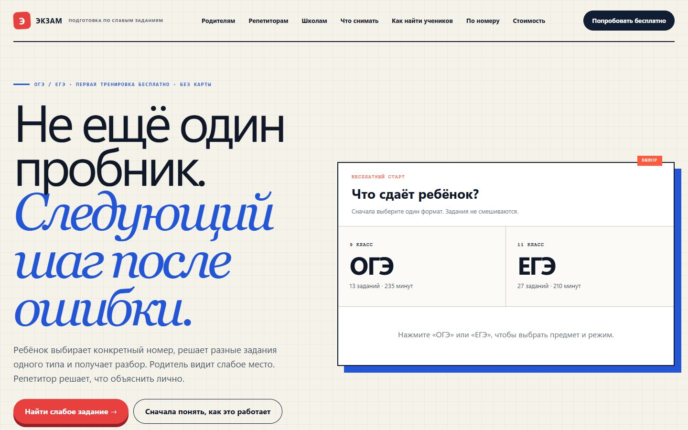
Снимок публичной версииПути для родителей, преподавателей и школ, бесплатный старт и Telegram‑точки входа.
Открыть проект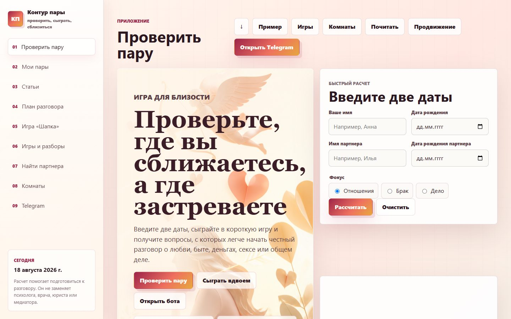
Снимок публичной версииРасчёты, игры, комнаты и статьи превращают деликатную тему в понятный первый шаг и повторное использование.
Открыть проект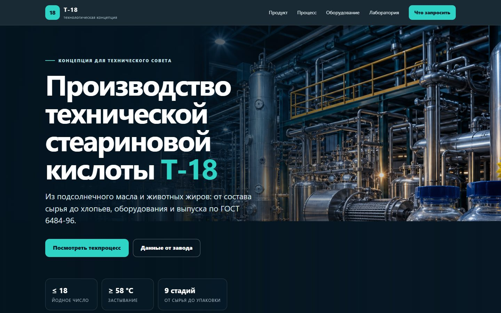
Снимок публичной версииДоказательный B2B‑сайт: продукт, процесс, оборудование, лаборатория и данные для технического решения.
Открыть проектКак выбрать товар и найти клиента
Эти проекты показывают, что я умею не только собирать интерфейс: исследую товарные гипотезы, упаковываю предложение и превращаю поиск клиентов в рабочую систему.
 Снимок локальной версии
Снимок локальной версииСистема выбора товара: кандидаты, 50 SKU в визуальной базе, конкуренты, цена, экономика и решение о тестовой партии. Клиент получает не «идею на вкус», а проверяемую гипотезу запуска.
Открыть превью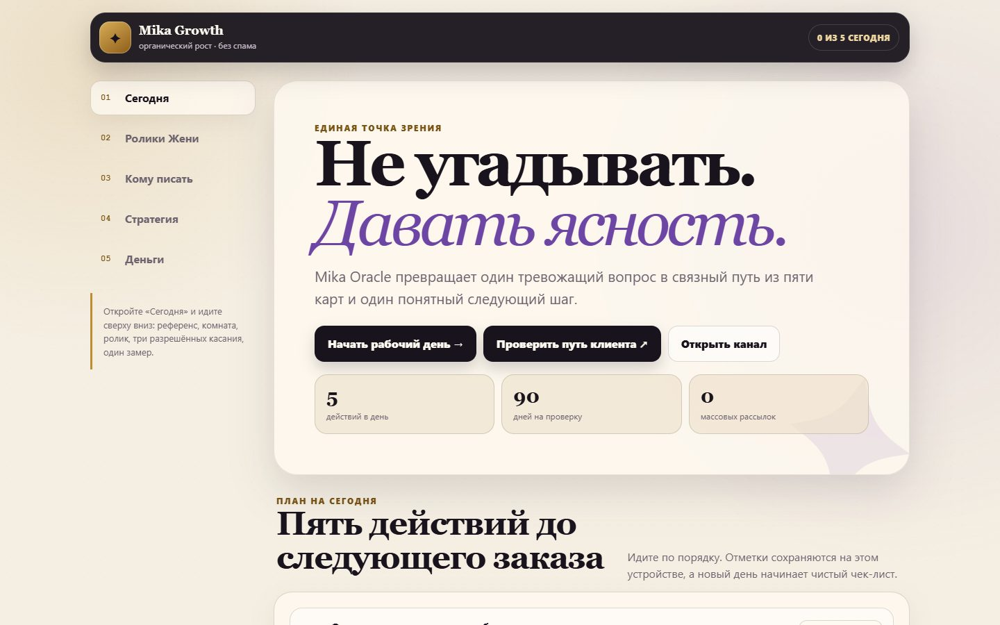
Снимок локальной версииРабочий кабинет связывает оффер, контент, список потенциальных клиентов и пять ежедневных действий. Отдельная база содержит 200 брендов для точечной проверки — без массового спама.
Открыть превью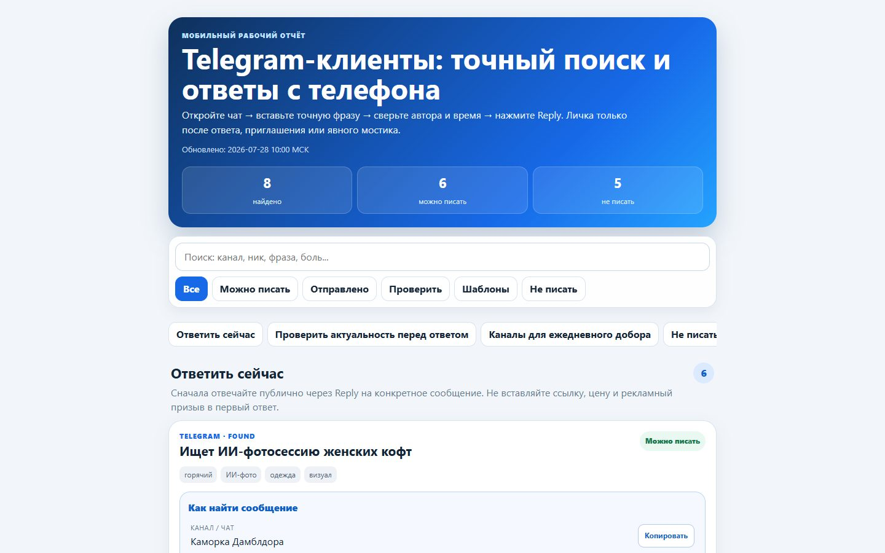
Снимок локальной версииМобильная доска для точного поиска открытых запросов, проверки актуальности и подготовки персонального ответа в исходной ветке. Это инструмент ручной квалификации, а не рассыльщик.
Открыть превью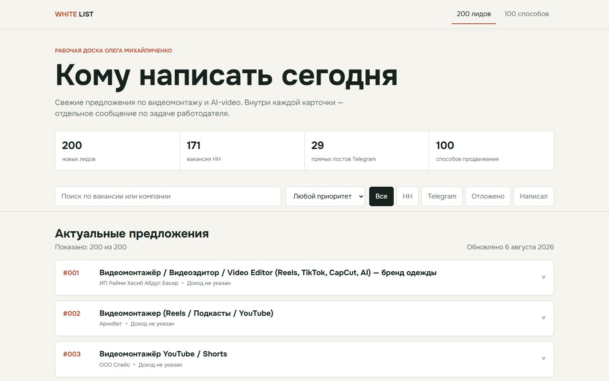
Снимок локального срезаРабочий срез объединяет 171 вакансию HH, 29 прямых Telegram‑постов и 100 способов продвижения. Данные относятся к дате проекта; ценность кейса — в структуре поиска, фильтрации и отклика.
Открыть превьюИсходники подтверждены на ПК
Для каждого продукта проверены реальные папки и исходники. Кнопка открывает крупное превью сохранённой версии.
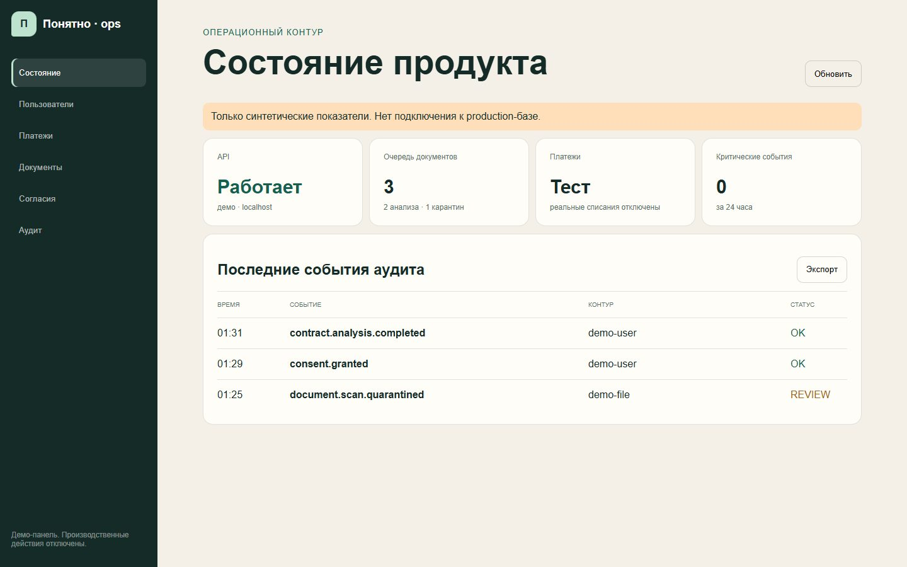
Снимок локальной версииВеб‑приложение, административный контур, Telegram‑бот и Mini App в единой бизнес‑архитектуре.
Открыть превью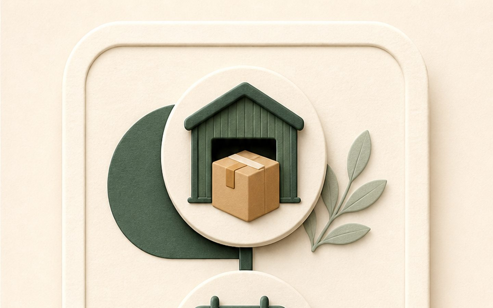
Визуальная система проектаЮридический продукт с доказательной базой, маршрутом дела, веб‑интерфейсом и Telegram‑контуром.
Открыть визуал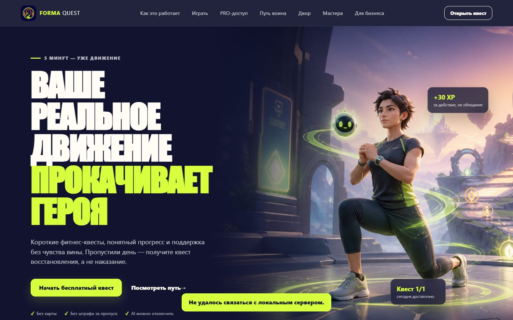
Снимок локальной версииНедельные маршруты, возрастные сценарии, безопасные ограничения и Telegram‑контур.
Открыть превьюСценарии, персональный кабинет, контентная воронка и адаптация интерфейса под Telegram.
Открыть визуал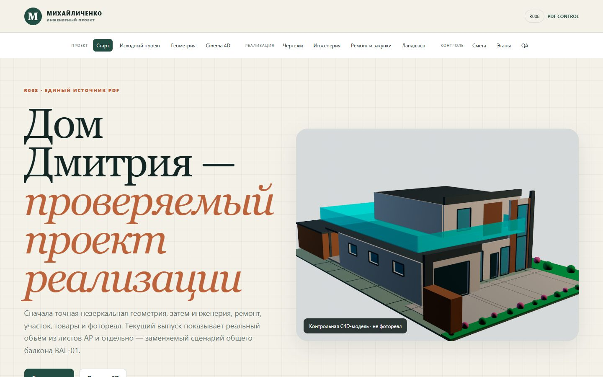
Снимок локальной версииМногостраничный проект: геометрия, инженерия, ремонт, ландшафт, смета и проверяемый маршрут реализации.
Открыть превью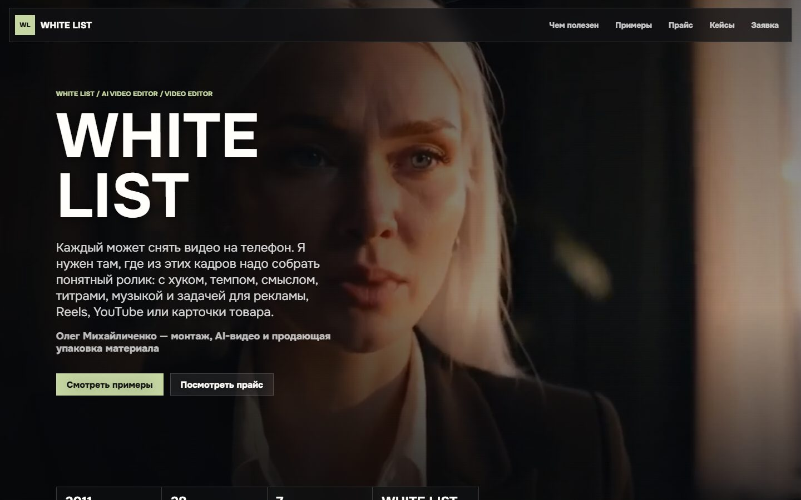
Снимок локальной версииПродающая упаковка видеоспециалиста: оффер, примеры, прайс, кейсы и отдельный маршрут поиска клиентов.
Открыть превьюОт идеи до канала продаж
Исследование уменьшает риск ошибочного продукта, упаковка объясняет ценность, интерфейс доводит до действия, а система лидов показывает, где искать первые разговоры.
Рынок, спрос, конкуренты, товарная или продуктовая гипотеза и решение, что проверять первым.
Оффер, кейсы, прайс, изображения, сайт, Avito/Kwork‑карточки и Telegram‑контент.
Площадки, публичные запросы, вакансии, точечные отклики и рабочая доска без массового спама.
Следующий проект может быть вашим
Достаточно описать товар, услугу или компетенцию. Я покажу, что проверить до разработки, какой формат запускать и где искать первые целевые обращения.